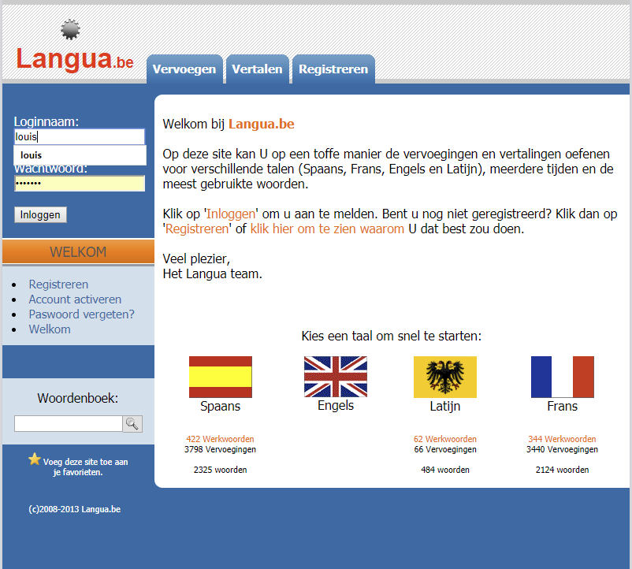

<section class="mainContent full-width clearfix">
    <div class="container">
        <div class="row">
            <div class="col-xs-12 blog-full">
                <div class="media courseList">
                    <a class="media-left" href="single-blog-left-sidebar.html">
                        
                        <span class="sticker-round bg-color-1">1 feb.<br>2018</span> </a>
                    <div class="media-body">
                        <h3 class="media-heading">
                            <a href="single-blog-left-sidebar.html" class="color-1">Langua 2.0!</a></h3>
                        <ul class="list-inline">
                            <li><i class="fa fa-user" aria-hidden="true"></i>Louis</li>
                            <li><i class="fa fa-calendar" aria-hidden="true"></i>1 februari 2018</li>
                        </ul>
                        <p>Na 10 jaar was het de hoogste tijd om deze website in een nieuw jasje te steken. Deze versie heeft een volledig nieuwe layout gekregen en maakt gebruik van de nieuwste web-technologiën zoals NodeJs & Angular5.</p>
                        <p>De oudere PHP versie gaat vanaf nu definitief de prullenmand in, maar geen paniek. Alle login gegevens, testresultaten, woordenboeken, enz... hebben we voor jou bewaard.</p>
                        <p>Hopelijk zitten er geen kinderziektes meer in, maar als er iets is dat beter kan stuur dan gerust een
                            <a href="mailto:louis@langua.be">mailtje naar mij.</a>.</p>
                        <p>PS: Latijn werd zo goed als niet gebruikt, dus is die niet meer beschikbaar.</p>
                    </div>
                </div>
                <div class="media courseList">
                    <a class="media-left" href="single-blog-left-sidebar.html">
                        
                        <span class="sticker-round bg-color-3">17 nov.<br>2017</span> </a>
                    <div class="media-body">
                        <h3 class="media-heading">
                            <a href="single-blog-left-sidebar.html" class="color-3">Bye bye (oude) Langua...</a></h3>
                        <ul class="list-inline">
                            <li><i class="fa fa-user" aria-hidden="true"></i>Louis</li>
                            <li><i class="fa fa-calendar" aria-hidden="true"></i>17 november 2017</li>
                        </ul>
                        <p>Langua.be is gegroeid omdat ik 10 jaar geleden grondig wou experimenteren met php & mysql. Programmeren is een hobby ;-)</p>
                        <p>Door omstandigheden is er lange tijd niet meer aan gewerkt, maar de vele 'fans' hebben het al die jaren trouw blijven gebruiken om hun taalkennis te blijven oefenen.</p>
                        <p>Omdat moderne browsers intussen veel meer mogelijkheden bieden gaan we de site helemaal opnieuw ontwikkelen. Kom dus binnenkort zeker terug om een kijkje te nemen.</p>
                    </div>
                </div>
            </div>
        </div>

        <!-- TODO Misschien ooit voor later...
        <div class="pagerArea text-center">
          <ul class="pager">
            <li class="prev"><a href="#"><i class="fa fa-arrow-left" aria-hidden="true"></i>Prev</a></li>
            <li><a href="#">1</a></li>
            <li><a href="#">2</a></li>
            <li><a href="#">3</a></li>
            <li><a href="#">...</a></li>
            <li><a href="#">15</a></li>
            <li class="next"><a href="#">Next<i class="fa fa-arrow-right" aria-hidden="true"></i></a></li>
          </ul>
        </div>
        -->

    </div>
</section>